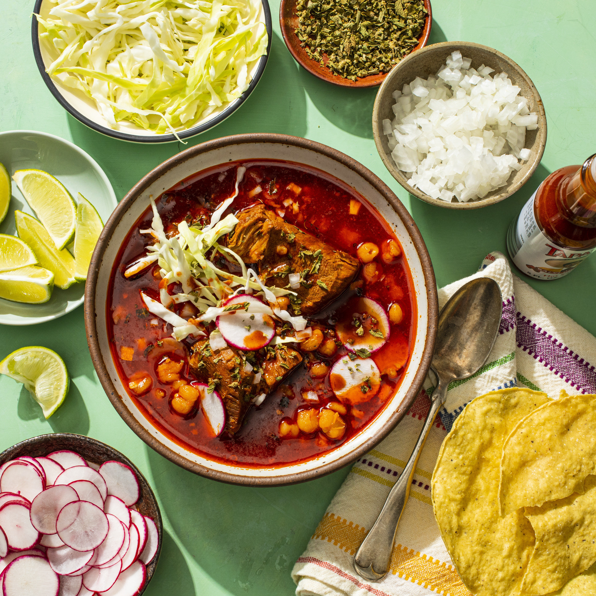

Pozole

Description
Pozole is a mexican dish derived from an Aztec recipe that predates the 16th century Spanish consquest of Mexico. There are three general variations of the soup: red pozole, green pozole, and white pozole. But all three contain some common ingredients--meat and hominy and the broth itself. Pozole blanco--spanish for white--is a thickened broth with the meat and hominy. Pozole verde--spanish for green--adds blended tomatillos and other green ingredients. Pozole rojo--spanish for red--has a reddish color imparted from dried chiles. Hominy is corn that has undergone nixtamalization and is one of the main ingredients of pozole. Briefly, nixtamalization is the process of creating hominy (in spanish, nixtamal) by bringing dried corn to a near boil and then letting it soak overnight in hot water and calcium hydroxide (also known as slaked lime or pickling lime), and finally removing the softened hulls.
Like many soups, I enjoy the warmth, rejuvenating sense, and satisfaction I receive from pozole. The only one I've tried is red pozole but its hard any other soup topping it. Compared to other soups I've tasted, this has to be one of my favorites in regards to taste and the different flavors that go into it. And I get to add or leave out any toppings I want or don't want to the pork, hominy, and broth. I like to add plenty of cabbage and tomato, a little bit of onion and celery, slices of radishes and jalepeños, lemon juice, and of course a couple of tostadas. It all feels refreshing and fresh. Plus I think the hominy is a neat ingredient and is unique out of the dishes I have eaten.
Ingredients
- 1/2 large white onion, peeled and quartered through root end
- 10 garlic cloves, peeled
- 2 bay leaves
- 1(3-1/2-pound) boneless pork butt roast, trimmed well and cut into 2-inch pieces
- 2-1/2 teaspoons table salt, divided
- 1 ounce dried guajillo chile, stemmed, seeded, and torn into 1-inch pieces
- 1 ounce dried ancho chiles, stemmed, seeded, and torn into 1-inch pieces
- 1/2 teaspoon dired Mexican oregano
- 3 (15-ounce) cans white hominy, rinsed
- Thinly sliced iceberg lettuce or green cabbage
- Thinly sliced radishes
- Finely chopped onion
- Crumbled dried Mexican oregano
- lime wedges
- Hot sauce
- Tostadas
Steps
- Bundle onion, garlic, and bay leaves in single layer of cheesecloth and secure with kitchen twine. Combine bundle, pork, 1-1/2 teaspoon salt, and 10 cups water in large Dutch oven and bring to boil over high heat. Adjust heat to gentle simmer and cook, covered, until pork is tender, about 2 hours, occasionally skimming foam off surface.
- Meanwhile, place guajillos and anchos in a medium bowl. Add 2 cups hot water, making sure chiles are completely submerged, and let stand until softened, about 20 minutes. Discard soaking liquid and transfer chiles to blender.
- When pork is tender, remove bundle. Transfer garlic cloves and 1 onion wedge to blender (discarding remaining bundle). Add oregano, remaining 1 teaspoon salt, and 1 cup pork broth and blend until smooth, 1 to 2 minutes, scraping down sides of blender halfway through (add 1/4 cup additional broth if necessary to maintain vortex).
- Strain puree through fine-mesh strainer directly into pot, pressing to extract as much puree as possible. Discard solids. Add hominy and return to simmer. Simmer, covered, for 20 minutes to allow flavors to meld. Season with salt to taste. Portion soup into individual bowls and serve, passing garnishes separately. (Pozole can be refrigerated for up to 3 days or frozen for up to 4 months.)